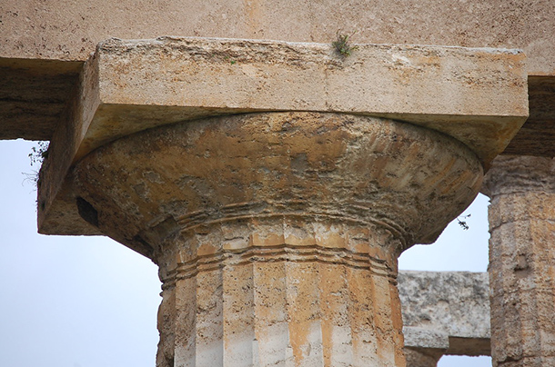

Glossario di Architettura
In questa pagina si trova un glossario dei termini di architettura greca più usati, che permettaranno di scoprire ancora più a fondo che favolosa costruzione sia il Tempio di Apollo Epicureo.
Adyton
Vano talvolta presente al fondo della cella di un tempio greco, il
cui accesso era riservato ai sacerdoti. La funzione non è del tutto
chiara: poteva ospitare riti misterici, oracolari o anche la statua
di culto.
Poteva essere di forma rettangolare (Selinunte, tempio C) o absidata
(edifici di età geometrica), e presentarsi internamente articolato
in colonne (Apollonion a Cirene), e non era necessariamente chiuso,
come dimostrano i casi dei templi di Apollo a Delfi e Zeus a Nemea,
in cui l’adyton è costituito da un livello più basso del piano di
calpestio. Anche l’area cicladica è stata interessata dalla presenza
dell’adyton nell’impianto planimetrico (tempio di Dioniso a Iria,
Naxos), mentre negli edifici templari sicelioti si ritrova
costantemente già a partire dal VI secolo a.C. (tempio di Apollo a
Siracusa).
Adyton del Tempio di Apollo, a Didyma
Architrave
I Greci denominavano questo elemento "epistilio". Esso è l'elemento rigido (pietra da taglio), o elastico (legno, ferro, cemento armato), che si dispone orizzontalmente sopra un vano, ed è destinato a sostenere il carico di altre strutture che vi si sovrappongono, e a trasmetterlo verticalmente sugli elementi (spalle, colonne) su cui s'appoggia oppure s'incastra. Forma, assieme al fregio e alla cornice, la trabeazione.
Architrave nell’ordine Dorico
Nell’ordine dorico, l’architrave è costituita da un parallelepipedo liscio coronato da una fascia (taenia), sotto la quale si posizionano listelli (regulae), dal cui bordo inferiore sporgono elementi cilindrici o troncoconici definiti guttae.
Architrave dorico del Partenone, nell’Acropoli di Atene
Architrave nell’ordine Ionico e Corinzio
Nell’ordine ionico, e in quello corinzio, l’architrave può essere liscio o diviso da due o tre fasce progressivamente aggettanti ed è coronato da modanature di raccordo con il fregio, il quale è liscio e decorato.
Architrave ionico del Tempio di Atena Nike, nell’Acropoli di Atene
Cella (Nao)
Era l'ambiente, all’interno di un tempio greco o romano, che ospitava l'immagine della divinità (una statua di solito) e simbolicamente era la casa del dio stesso; per questo era proibito entrarvi se non durante particolari festività, mentre vi accedevano regolarmente soltanto alcuni tipi di sacerdoti.
Le pareti esterne della cella potevano presentare ordini applicati
(lesene o semicolonne), che quando la cella era circondata dal
colonnato (peristasi), rispecchiavano sui muri le colonne esterne,
e quando il tempio era privo di peristasi ne costituivano una
sorta di surrogato (tempio pseudoperiptero). In altri casi i muri
esterni potevano essere coronati da un fregio o da altre
decorazioni riprese dalle trabeazioni, non necessariamente dello
stesso ordine della peristasi.
L'interno della cella nei templi greci poteva essere suddiviso in
navate da colonnati su due ordini, necessari per sostenere il
tetto negli edifici templari di maggiori dimensioni, in
particolare in epoca greca arcaica e classica. In seguito
l'interno della cella venne decorato con un colonnato, spesso
ancora su due ordini, addossato come semicolonne o lesene alle
pareti interne.
Vista da nord della cella del Tempio di Apollo Epicureo
Fregio
È una zona decorata con andamento prevalentemente orizzontale; in particolare, nella trabeazione degli ordini classici, la parte fra architrave e cornice e, per analogia, in porte o finestre sormontate da una cornice di coronamento, la fascia fra questa e la riquadratura. Può essere presente anche nel capitello dorico romano tra il collarino e l’echino e nel capitello ionico, il giro di ovoli.
Fregio nell’ordine Dorico
Il fregio dorico, detto anche triglifo, è la parte più caratteristica dell'ordine, del quale riprodurrebbe secondo Vitruvio (IV, 2) le forme lignee originarie. Esso consta di una serie di spazi rettangolari, presso che quadrati, metope, separate da elementi più stretti e sporgenti, scanalati verticalmente, triglifi. I triglifi rappresenterebbero le testate delle travi appoggiate all'epistilio, o meglio il loro rivestimento decorativo, le metope gli spazî compresi tra di esse.
Vista da nord della cella del Tempio di Apollo Epicureo
Fregio nell’ordine Ionico e Corinzio
Negli altri ordini il fregio non è suddiviso: nello ionico si estende in una fascia continua fra l'architrave e la cornice. Esso non era come il dorico un elemento essenziale della trabeazione, e infatti una serie di dentelli faceva immediatamente seguito all'architrave. I dentelli, in modo simile ai triglifi, raffiguravano l'estremità dei travicelli di copertura. In Grecia, già nel sec. VI a. C., i tesori dei Sifnî, degli Cnidí.dei Massalioti, a Delfi, presentano al posto dei dentelli il fregio; quando poi lo stile ionico cominciò a sostituire il dorico, il fregio divenne un elemento quasi costante della trabeazione.
L'ordine corinzio, derivazione dello ionico (raramente usato dai Greci e preferito invece dai Romani), adottò fin da principio il fregio senza mutarne forme e proporzioni. In esso più frequenti delle figure erano gli ornati di tipo vegetale o motivi suggeriti dalla destinazione dell'edificio (nei templi, oggetti rituali). Molto spesso il fregio corinzio si mantenne liscio, specialmente in buona epoca, quando l'architrave era decorato. Su di esso potevano essere scolpite scritte dedicatorie, che talvolta trovavano posto su targhe invadenti anche l'architrave
Fregio Amazzonomachia (in alto)
e Centauromachia (al centro e in basso)
presenti nel Tempio di Apollo Epicureo
Metope
La mètopa è un elemento architettonico del fregio dell'ordine dorico
dell'architettura greca e romana. Consiste in una formella in
pietra, scolpita a rilievo, a seconda dei casi altorilievo o
bassorilievo, posta in alternanza con i triglifi. Spessissimo il
soggetto rappresentato in una metopa fu il bucranio, ovvero un
teschio di bue in bassorilievo.
Le metope scolpite spesso costituivano dei cicli compiuti, come nel
caso del Partenone dell'Acropoli di Atene, in cui sono rappresentate
scene mitologiche che celebrano la vittoria sui persiani.
Metopa del Partenone raffigurante la lotta tra un Centauro e un Lapita
Opistodomo
Nel tempio greco l'opistodomo è lo spazio posto dietro la cella.
Esso poteva contenere le suppellettili utili al rito e ai sacrifici.
Dato che l'opistodomo ospitava anche le ricche offerte consacrate
agli dei, era chiuso con cancellate metalliche. Vi potevano accedere
solo i sacerdoti. Ma solitamente e principalmente l'opistodomo era
costruito solamente per creare quella perfezione, identificata
nell'analoghìa (la proporzione in architettura). Infatti, la sua
costruzione creava simmetria, in relazione al pronao.
Tempio di Afaia ad Egina, vista dell'Opistodomo
Periptero
Vengono così chiamati i templi che hanno intorno alla cella una fila
di colonne. L'appellativo, dato da Vitruvio tanto ai templi a cella
rotonda quanto a quelli a cella rettangolare, è riservato dalla
moderna terminologia archeologica, più particolarmente a questi
ultimi.
I templi di tale tipo, secondo la norma vitruviana, dovrebbero avere
sei colonne sulle fronti e undici, comprese quelle d'angolo, lungo i
fianchi. In realtà, specialmente nei peripteri più antichi, si
ebbero spesso variazioni nel numero delle colonne laterali, e
talvolta anche in quello delle colonne frontali, ad esempio: cinque
nell'Apollonion di Thermos, nell'Etolia; otto nel Partenone, ecc.
Periptero del Partenone, nell’Acropoli di Atene
Pronao
Nei templi antichi è lo spazio compreso tra la cella del tempio e le colonne antistanti e, in alcuni particolari edifici di culto, come i mitrei, la stanza che precede il santuario. Per estensione, indica la parte anteriore di un qualsiasi edificio (anche moderno) che abbia forma simile a quella d'un tempio, con facciata colonnata e frontone.
Pronao e facciata del Tempio della Concordia, nella Valle dei Templi di Agrigento
Stile Dorico
L'ordine dorico è il più antico degli ordini architettonici greci.
Il suo nome è dovuto all'origine peloponnesiaca, anche se si diffuse
a partire dal VII secolo a.C., al resto del territorio greco e alle
colonie greche in Italia.
In questo ordine sono costruiti tutti i templi superstiti della
Magna Grecia e alcuni degli edifici più importanti della Grecia
stessa, tra i quali il Partenone nell'Acropoli di Atene e il Tempio
di Zeus ad Olimpia.
Il Tempio Dorico
La piattaforma del tempio, posta sulla fondazione, è chiamata euthynteria ed è solitamente realizzata in pietra locale di scarso pregio, al contrario della costruzione vera e propria, realizzata in marmo o comunque di pietra pregiata proveniente spesso da cave relativamente lontane. Sulla base del tempio poggia una piattaforma (crepidoma o crepidine) formata dai gradini di accesso al tempio, inizialmente in numero di tre e che aumenteranno con il tempo. I primi due gradini sono detti stereobate e la parte superiore del crepidoma è detta stilobate, in quanto vi poggia direttamente la colonna (stilo), priva di base. Tale assenza rappresenta una delle caratteristiche originarie del dorico. Il fusto o scapo della colonna, rastremato verso l'alto, presenta delle scanalature (da 20 a 22) poco profonde unite a spigolo vivo, che esprimono una spinta ascendente e accentuano l'effetto chiaroscuro, ed è caratterizzato da un rigonfiamento a un terzo dell'altezza detto entasi, che serve a correggere l'illusione ottica del restringimento generata in una fila di colonne perfettamente tronco-coniche. All'inizio le colonne dei templi dorici sono lignee, ma già nel VII secolo a.C. il legno comincia ad essere progressivamente sostituito con la più resistente pietra e, in alcuni casi, con il marmo. Ha un'altezza di 7 volte il diametro della sua base. Il fusto dorico è formato da tanti rocchi sovrapposti a secco fissandoli da un perno di bronzo. Il fusto è unito al capitello mediante il collarino.
Santuario di Hera, a Metaponto
Il Capitello Dorico
Il capitello dorico è formato dall'echino, una specie di "cuscinetto rigonfio" che tende alla forma troncoconica, su cui poggia l'abaco, che ha la forma di un parallelepipedo schiacciato e significa tavola, basamento.
Capitello dorico d una colonna del tempio di Apollo a Siracusa
Stile Corinzio
Ha le caratteristiche degli stessi elementi dell'ordine ionico, con un capitello decorato con foglie d'acanto. Anche se di origine greca, lo stile corinzio non fu utilizzato spesso nell'architettura greca, rispetto all'ordine dorico e a quello ionico. Secondo Vitruvio (De architectura, libro IV) il capitello corinzio fu inventato dall'architetto Callimaco, che si ispirò ad un cesto sormontato da una lastra, lasciato come offerta votiva su un sepolcro e ricoperto da una pianta d'acanto, inoltre documentò che il suo utilizzo consisteva in una variante applicata alla trabeazione ionica o dorica.
Il Tempio Corinzio
Il capitello corinzio si compone di un kalathos troncoconico e con orlo appena ripiegato in fuori, a cui si sovrappone un abaco con i lati modanati e leggermente incurvati in pianta. Alla base, il kalathos è rivestito da due corone di otto foglie d'acanto con la cima ripiegata in fuori: le foglie della prima corona si dispongono a due per lato, mentre quelle della seconda corona al centro di ogni lato e agli angoli. Al di sopra delle foglie della prima corona nascono degli steli che prendono il nome di caulicoli, da cui nascono a loro volta "calici" a due foglie d'acanto disposte di profilo, interna ed esterna. A sua volta dal calice si originano due steli a nastro che terminano avvolgendosi in spirale: uno rivolto verso l'interno, si appoggia sul kalathos al centro di ciascun lato (elice), mentre l'altro si dispone obliquamente sull'angolo (voluta), distaccandosi dal kalathos e sorreggendo gli spigoli dell'abaco. Infine, al di sopra della foglia centrale della seconda corona, spesso con la mediazione di un calicetto nasce uno stelo che termina in un fiore al centro dei lati dell'abaco ("fiore dell'abaco").
Normalmente le foglie d'acanto e gli altri elementi decorativi sono intagliati nei particolari, ma a volte il capitello presenta solo le sagome lisce delle forme vegetali che rivestivano il kalathos, e in questo caso viene definito "a foglie lisce". Nella struttura del capitello sono altre volte inseriti degli elementi figurati, in parte anche alterandola, e allora il capitello corinzio si definisce "figurato". Anche i lati dell'abaco possono presentare modanature decorate.
Una variante, il capitello corinzio italico, diffuso in epoca romana repubblicana, si presentano privi di caulicoli e con fiore dell'abaco molto grande e sporgente, posto sopra il kalathos. Una variante che si evolve in età romana nelle province orientali, il capitello corinzio asiatico, presenta l'acanto a fogliette aguzze e segue una propria evoluzione formale.
Particolare di una colonna corinzia della basilica di San Paolo Maggiore di Napoli
Stile Ionico
Questo ordine assorbe e rielabora motivi orientali; la ricca decorazione orna la struttura architettonica senza appesantirla. Tradizionalmente è riferito al complesso delle tradizioni artistico-culturali riferibili al gruppo etnico degli Ioni, insediati sulle coste dell'Asia Minore (Iònia), a stretto contatto con le culture dell'Oriente. Ad Atene si possono trovare due esempi di ordine ionico di epoca classica: l'Eretteo e il tempio di Atena Nike (entrambi sull'Acropoli).
Il Tempio Ionico
La fondazione del tempio era in genere in pietra locale ed è chiamata euthynteria, su di essa poggiano i gradini di accesso al tempio (crepidoma). A differenza dell'ordine dorico, le colonne ioniche non poggiano direttamente sul gradino, ma su una base formata da due elementi (Asia Minore), uno chiamato toro di forma convessa, sul quale stava la scotia di forma concava. In Grecia abbiamo invece due tori con in mezzo la scotia. In età romana a quest'ultima "base attica" greca, si aggiungerà la "base composita", con il raddoppio della scotia intermedia. Al di sopra della base si ergeva il fusto, di proporzioni più snelle rispetto a quello dell'ordine dorico e privo di rastremazione. Le scanalature potevano variare da un numero di 16 fino a 20 ed erano separate da listelli, invece che incontrarsi a spigolo acuto come nel fusto dorico, mentre l'altezza poteva arrivare anche a 10 volte il diametro della base.
Tempio di Atena Nike, nell’Acropoli di Atene
Il Capitello Ionico
Nel capitello ionico, tra echino e abaco si inserisce un nastro, chiamato "canale delle volute", che si avvolge poi in grandi volute terminanti in un "occhio centrale"; le volute sporgono al di sotto del margine inferiore dell'echino. Lo spazio angolare tra echino e volute viene riempito dall'introduzione di due semipalmette che si sovrappongono all'echino. Anche in questo caso insieme al capitello vero e proprio è spesso intagliata la parte superiore del fusto, che, se distinta dal resto del fusto, viene definita "collarino".
Capitello ionico di una colonna, nei pressi del Partenone
Stilobate
Lo stilobate è nel tempio greco il piano su cui poggia il colonnato. È formato da blocchi di pietra disposti affiancati orizzontalmente, fino a formare una base uniforme. Nell'accezione moderna, si definisce invece "stilobate" tutta la gradinata, oppure l'intera parete verticale, che si trova sotto un colonnato.
Stilobate del Tempio di Afaia, ad Egina